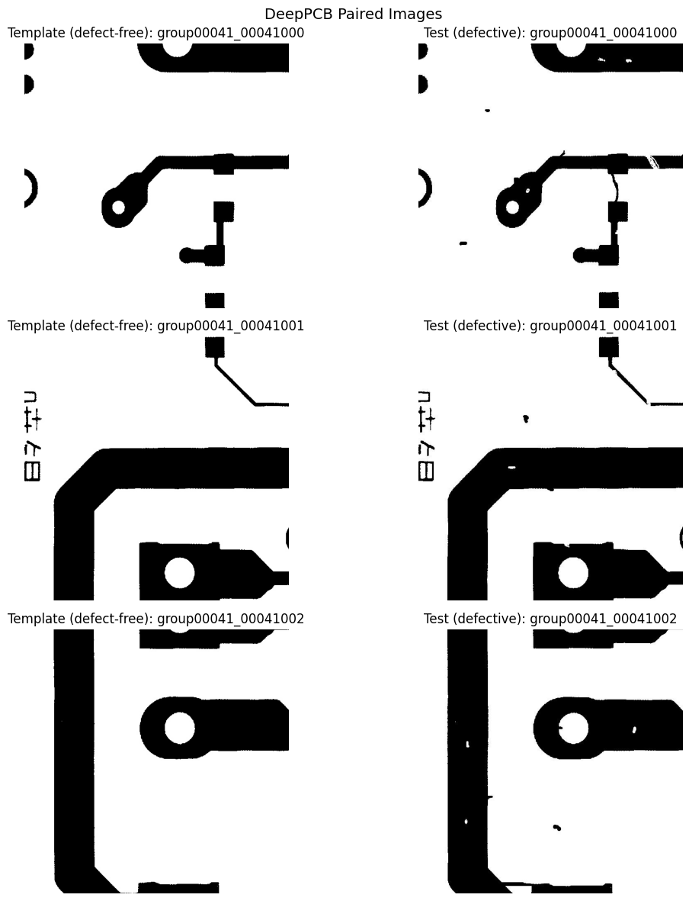
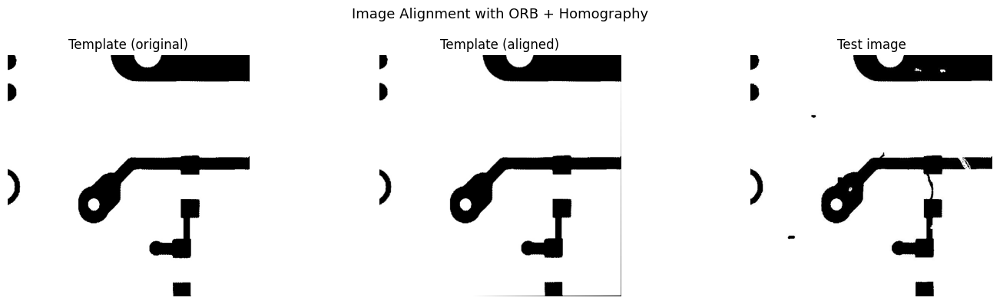
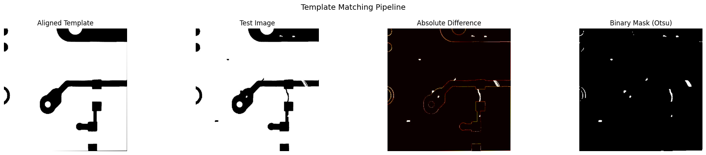
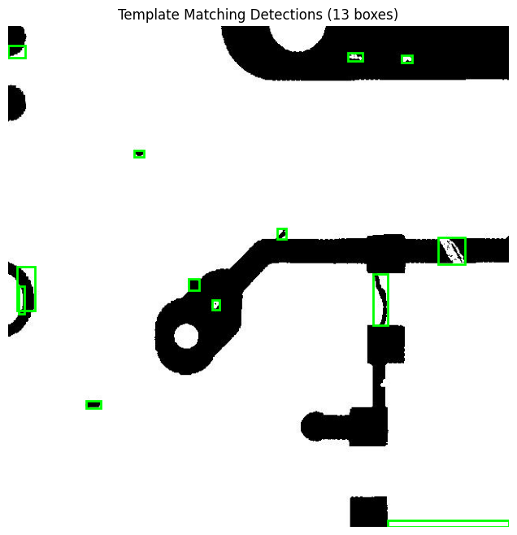
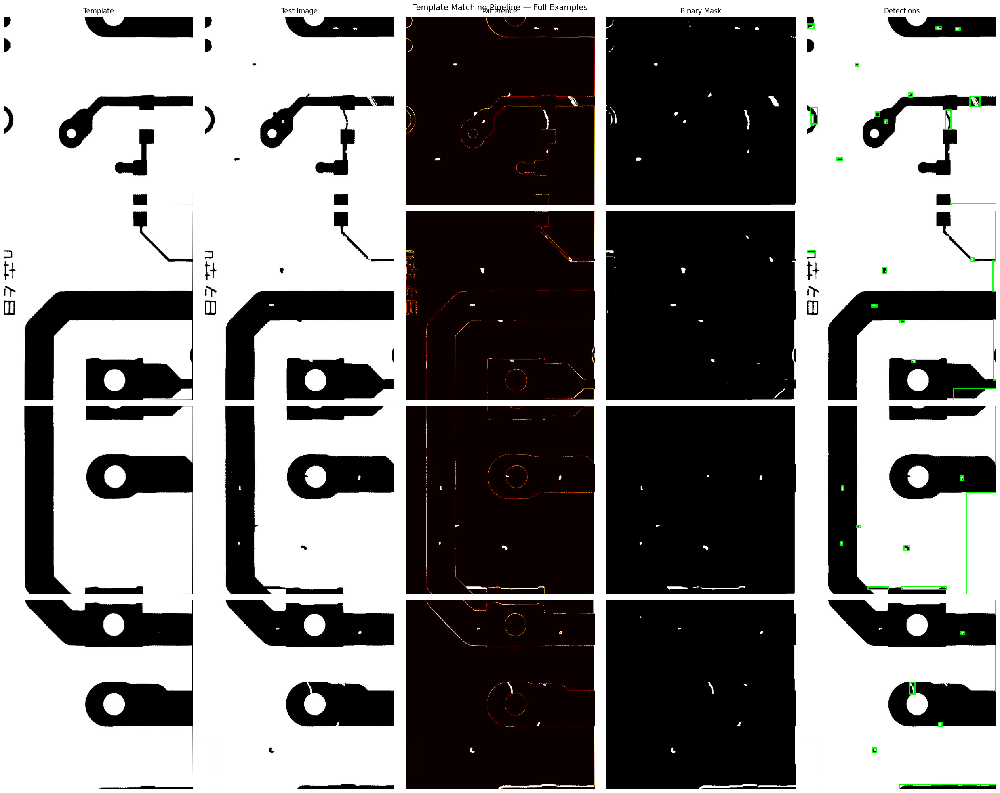

Notebook 05: Template Matching Baseline#
This notebook implements classical computer vision defect detection using the DeepPCB dataset’s paired images (defect-free template + defective test image). By computing pixel-level differences, we detect defect regions without any learned model.
This serves as the baseline against which we compare deep learning approaches (YOLOv8, ResNet) from earlier notebooks.
Pipeline:
Load paired template/test images from DeepPCB
Align images using ORB feature matching + homography
Compute pixel-level absolute difference
Threshold and clean with morphological operations
Extract bounding boxes from contours
Evaluate against ground truth annotations
import cv2
import numpy as np
import matplotlib.pyplot as plt
import matplotlib.patches as patches
from pathlib import Path
from collections import Counter
import pandas as pd
PROJECT_ROOT = Path(".").resolve().parent
DATA_DIR = PROJECT_ROOT / "data"
DEEPPCB_DIR = DATA_DIR / "deeppcb-yolo"
IMAGES_DIR = DEEPPCB_DIR / "images"
TEMPLATES_DIR = DEEPPCB_DIR / "templates"
LABELS_DIR = DEEPPCB_DIR / "labels"
CLASS_NAMES = {
0: "missing_hole", 1: "mouse_bite", 2: "open_circuit",
3: "short", 4: "spur", 5: "spurious_copper",
}
# List available pairs
test_images = sorted(IMAGES_DIR.glob("*.jpg"))
print(f"DeepPCB pairs available: {len(test_images)}")
DeepPCB pairs available: 1500
1. Load DeepPCB Paired Images#
Each DeepPCB sample consists of a template (defect-free reference) and a test (defective) image of the same PCB region.
# Display sample pairs
sample_paths = test_images[:3]
fig, axes = plt.subplots(len(sample_paths), 2, figsize=(12, 4 * len(sample_paths)))
for i, img_path in enumerate(sample_paths):
template_path = TEMPLATES_DIR / img_path.name
test_img = cv2.cvtColor(cv2.imread(str(img_path)), cv2.COLOR_BGR2RGB)
temp_img = cv2.cvtColor(cv2.imread(str(template_path)), cv2.COLOR_BGR2RGB)
axes[i, 0].imshow(temp_img)
axes[i, 0].set_title(f"Template (defect-free): {img_path.stem}")
axes[i, 0].axis("off")
axes[i, 1].imshow(test_img)
axes[i, 1].set_title(f"Test (defective): {img_path.stem}")
axes[i, 1].axis("off")
plt.suptitle("DeepPCB Paired Images", fontsize=14)
plt.tight_layout()
plt.show()

2. Image Alignment#
Even though DeepPCB pairs are roughly aligned, slight shifts can cause false positives in differencing. We use ORB feature matching with RANSAC-based homography to align the template to the test image.
def align_images(template, test_img, max_features=500):
"""Align template to test image using ORB + homography.
Returns aligned template or original if alignment fails.
"""
gray_temp = cv2.cvtColor(template, cv2.COLOR_BGR2GRAY)
gray_test = cv2.cvtColor(test_img, cv2.COLOR_BGR2GRAY)
orb = cv2.ORB_create(max_features)
kp1, desc1 = orb.detectAndCompute(gray_temp, None)
kp2, desc2 = orb.detectAndCompute(gray_test, None)
if desc1 is None or desc2 is None or len(kp1) < 4 or len(kp2) < 4:
return template # Fallback to unaligned
bf = cv2.BFMatcher(cv2.NORM_HAMMING, crossCheck=True)
matches = bf.match(desc1, desc2)
matches = sorted(matches, key=lambda m: m.distance)
if len(matches) < 4:
return template
pts1 = np.float32([kp1[m.queryIdx].pt for m in matches]).reshape(-1, 1, 2)
pts2 = np.float32([kp2[m.trainIdx].pt for m in matches]).reshape(-1, 1, 2)
H, mask = cv2.findHomography(pts1, pts2, cv2.RANSAC, 5.0)
if H is None:
return template
h, w = test_img.shape[:2]
aligned = cv2.warpPerspective(template, H, (w, h))
return aligned
# Demo alignment on first pair
if test_images:
demo_path = test_images[0]
temp = cv2.imread(str(TEMPLATES_DIR / demo_path.name))
test = cv2.imread(str(demo_path))
aligned = align_images(temp, test)
fig, axes = plt.subplots(1, 3, figsize=(15, 4))
axes[0].imshow(cv2.cvtColor(temp, cv2.COLOR_BGR2RGB))
axes[0].set_title("Template (original)")
axes[1].imshow(cv2.cvtColor(aligned, cv2.COLOR_BGR2RGB))
axes[1].set_title("Template (aligned)")
axes[2].imshow(cv2.cvtColor(test, cv2.COLOR_BGR2RGB))
axes[2].set_title("Test image")
for ax in axes: ax.axis("off")
plt.suptitle("Image Alignment with ORB + Homography", fontsize=13)
plt.tight_layout()
plt.show()

3. Pixel-Level Differencing#
After alignment, we compute cv2.absdiff() between template and test, convert to grayscale, blur to reduce noise, and apply Otsu thresholding.
def compute_diff_mask(template, test_img, blur_ksize=5, morph_ksize=3):
"""Compute binary defect mask from template-test difference."""
# Absolute difference
diff = cv2.absdiff(template, test_img)
gray_diff = cv2.cvtColor(diff, cv2.COLOR_BGR2GRAY)
# Gaussian blur to reduce noise
blurred = cv2.GaussianBlur(gray_diff, (blur_ksize, blur_ksize), 0)
# Otsu thresholding
_, binary = cv2.threshold(blurred, 0, 255, cv2.THRESH_BINARY + cv2.THRESH_OTSU)
# Morphological operations to clean up
kernel = np.ones((morph_ksize, morph_ksize), np.uint8)
binary = cv2.morphologyEx(binary, cv2.MORPH_OPEN, kernel) # Remove small noise
binary = cv2.morphologyEx(binary, cv2.MORPH_CLOSE, kernel) # Fill small gaps
return diff, gray_diff, binary
# Visualize the pipeline on a sample
if test_images:
demo_path = test_images[0]
temp = cv2.imread(str(TEMPLATES_DIR / demo_path.name))
test = cv2.imread(str(demo_path))
aligned = align_images(temp, test)
diff, gray_diff, mask = compute_diff_mask(aligned, test)
fig, axes = plt.subplots(1, 4, figsize=(20, 4))
axes[0].imshow(cv2.cvtColor(aligned, cv2.COLOR_BGR2RGB))
axes[0].set_title("Aligned Template")
axes[1].imshow(cv2.cvtColor(test, cv2.COLOR_BGR2RGB))
axes[1].set_title("Test Image")
axes[2].imshow(gray_diff, cmap="hot")
axes[2].set_title("Absolute Difference")
axes[3].imshow(mask, cmap="gray")
axes[3].set_title("Binary Mask (Otsu)")
for ax in axes: ax.axis("off")
plt.suptitle("Template Matching Pipeline", fontsize=14)
plt.tight_layout()
plt.show()

4. Contour Detection & Bounding Box Extraction#
def extract_bboxes(mask, min_area=50):
"""Extract bounding boxes from binary mask contours."""
contours, _ = cv2.findContours(mask, cv2.RETR_EXTERNAL, cv2.CHAIN_APPROX_SIMPLE)
bboxes = []
for cnt in contours:
area = cv2.contourArea(cnt)
if area < min_area:
continue
x, y, w, h = cv2.boundingRect(cnt)
bboxes.append([x, y, x + w, y + h])
return bboxes
def template_match_detect(template_path, test_path):
"""Full template matching pipeline: align, diff, threshold, extract bboxes."""
temp = cv2.imread(str(template_path))
test = cv2.imread(str(test_path))
aligned = align_images(temp, test)
_, _, mask = compute_diff_mask(aligned, test)
bboxes = extract_bboxes(mask)
return bboxes, test
# Demo: show detected bboxes
if test_images:
demo_path = test_images[0]
bboxes, test_img = template_match_detect(TEMPLATES_DIR / demo_path.name, demo_path)
fig, ax = plt.subplots(figsize=(8, 8))
ax.imshow(cv2.cvtColor(test_img, cv2.COLOR_BGR2RGB))
for x1, y1, x2, y2 in bboxes:
rect = patches.Rectangle((x1, y1), x2-x1, y2-y1,
linewidth=2, edgecolor="lime", facecolor="none")
ax.add_patch(rect)
ax.set_title(f"Template Matching Detections ({len(bboxes)} boxes)")
ax.axis("off")
plt.show()

5. Evaluation Against Ground Truth#
We compute IoU between predicted bounding boxes and ground truth, then calculate precision and recall at IoU >= 0.5.
def compute_iou(box1, box2):
"""Compute IoU between two [x1,y1,x2,y2] boxes."""
xi1 = max(box1[0], box2[0])
yi1 = max(box1[1], box2[1])
xi2 = min(box1[2], box2[2])
yi2 = min(box1[3], box2[3])
inter = max(0, xi2 - xi1) * max(0, yi2 - yi1)
area1 = (box1[2] - box1[0]) * (box1[3] - box1[1])
area2 = (box2[2] - box2[0]) * (box2[3] - box2[1])
union = area1 + area2 - inter
return inter / union if union > 0 else 0
def load_gt_boxes(label_path, img_w, img_h):
"""Load YOLO-format GT boxes and convert to pixel coords."""
boxes = []
with open(label_path, "r") as f:
for line in f:
parts = line.strip().split()
if len(parts) != 5: continue
_, xc, yc, w, h = float(parts[0]), float(parts[1]), float(parts[2]), float(parts[3]), float(parts[4])
x1 = int((xc - w/2) * img_w)
y1 = int((yc - h/2) * img_h)
x2 = int((xc + w/2) * img_w)
y2 = int((yc + h/2) * img_h)
boxes.append([x1, y1, x2, y2])
return boxes
# Evaluate on all DeepPCB pairs
total_tp, total_fp, total_fn = 0, 0, 0
iou_threshold = 0.5
eval_results = []
for img_path in test_images:
template_path = TEMPLATES_DIR / img_path.name
label_path = LABELS_DIR / (img_path.stem + ".txt")
if not template_path.exists() or not label_path.exists():
continue
pred_boxes, test_img = template_match_detect(template_path, img_path)
h, w = test_img.shape[:2]
gt_boxes = load_gt_boxes(label_path, w, h)
# Match predictions to GT
matched_gt = set()
tp, fp = 0, 0
for pred in pred_boxes:
best_iou, best_gt = 0, -1
for gi, gt in enumerate(gt_boxes):
iou = compute_iou(pred, gt)
if iou > best_iou:
best_iou = iou
best_gt = gi
if best_iou >= iou_threshold and best_gt not in matched_gt:
tp += 1
matched_gt.add(best_gt)
else:
fp += 1
fn = len(gt_boxes) - len(matched_gt)
total_tp += tp
total_fp += fp
total_fn += fn
eval_results.append({"image": img_path.stem, "tp": tp, "fp": fp, "fn": fn,
"gt_count": len(gt_boxes), "pred_count": len(pred_boxes)})
precision = total_tp / (total_tp + total_fp) if (total_tp + total_fp) > 0 else 0
recall = total_tp / (total_tp + total_fn) if (total_tp + total_fn) > 0 else 0
f1 = 2 * precision * recall / (precision + recall) if (precision + recall) > 0 else 0
print(f"=== Template Matching Evaluation (IoU >= {iou_threshold}) ===")
print(f"Images evaluated: {len(eval_results)}")
print(f"True Positives: {total_tp}")
print(f"False Positives: {total_fp}")
print(f"False Negatives: {total_fn}")
print(f"Precision: {precision:.4f}")
print(f"Recall: {recall:.4f}")
print(f"F1 Score: {f1:.4f}")
# Per-image results breakdown
if eval_results:
eval_df = pd.DataFrame(eval_results)
print(f"\nPer-image results (first 10):")
print(eval_df.head(10).to_string(index=False))
=== Template Matching Evaluation (IoU >= 0.5) ===
Images evaluated: 1500
True Positives: 99
False Positives: 43600
False Negatives: 8413
Precision: 0.0023
Recall: 0.0116
F1 Score: 0.0038
Per-image results (first 10):
image tp fp fn gt_count pred_count
group00041_00041000 0 13 7 7 13
group00041_00041001 0 10 5 5 10
group00041_00041002 0 9 4 4 9
group00041_00041003 0 8 4 4 8
group00041_00041004 0 8 7 7 8
group00041_00041005 0 12 7 7 12
group00041_00041006 0 48 8 8 48
group00041_00041007 0 35 8 8 35
group00041_00041008 0 10 4 4 10
group00041_00041009 0 18 6 6 18
6. Full Pipeline Visualization#
Showing the complete template matching pipeline on several examples.
# Visualize full pipeline for 4 examples
samples = test_images[:4]
fig, axes = plt.subplots(len(samples), 5, figsize=(25, 5 * len(samples)))
col_titles = ["Template", "Test Image", "Difference", "Binary Mask", "Detections"]
for i, img_path in enumerate(samples):
template_path = TEMPLATES_DIR / img_path.name
temp = cv2.imread(str(template_path))
test = cv2.imread(str(img_path))
aligned = align_images(temp, test)
diff, gray_diff, mask = compute_diff_mask(aligned, test)
bboxes = extract_bboxes(mask)
axes[i, 0].imshow(cv2.cvtColor(aligned, cv2.COLOR_BGR2RGB))
axes[i, 1].imshow(cv2.cvtColor(test, cv2.COLOR_BGR2RGB))
axes[i, 2].imshow(gray_diff, cmap="hot")
axes[i, 3].imshow(mask, cmap="gray")
det_img = cv2.cvtColor(test.copy(), cv2.COLOR_BGR2RGB)
axes[i, 4].imshow(det_img)
for x1, y1, x2, y2 in bboxes:
rect = patches.Rectangle((x1, y1), x2-x1, y2-y1,
linewidth=2, edgecolor="lime", facecolor="none")
axes[i, 4].add_patch(rect)
if i == 0:
for j, title in enumerate(col_titles):
axes[i, j].set_title(title, fontsize=12)
for j in range(5):
axes[i, j].axis("off")
plt.suptitle("Template Matching Pipeline — Full Examples", fontsize=14)
plt.tight_layout()
plt.show()

7. Limitations Analysis#
Where template matching fails:#
Lighting variation — Differences in illumination between template and test images create false positives in the difference map, even in defect-free regions.
Alignment errors — ORB+homography can fail on images with few distinctive features (uniform PCB regions). Misalignment causes systematic false positives along edges.
Subtle defects — Small defects (e.g., hairline cracks, thin shorts) may not produce sufficient pixel-level difference to survive thresholding.
No class discrimination — Template matching only detects that something is different, not what type of defect it is. Deep learning approaches classify defects simultaneously.
Requires reference template — Every board design needs a known-good reference. New designs or revisions require new templates, while learned models generalize across designs.
Why deep learning outperforms classical approaches:#
Learned features capture semantic defect patterns, not just pixel differences
Robustness to lighting, rotation, and scale variation via data augmentation
Joint detection + classification in a single forward pass (YOLO)
Generalization across board designs without per-design templates
Template matching remains useful as a sanity check and for scenarios where labeled training data is unavailable.